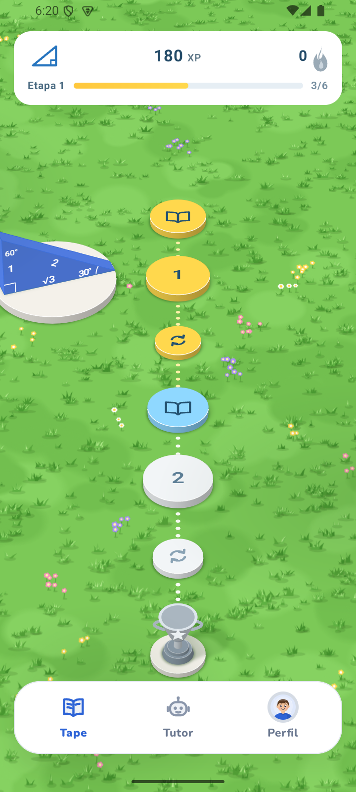
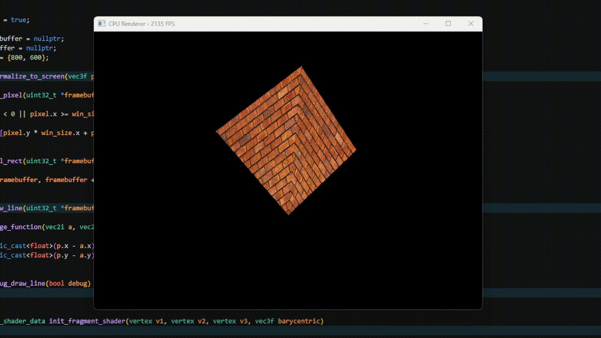
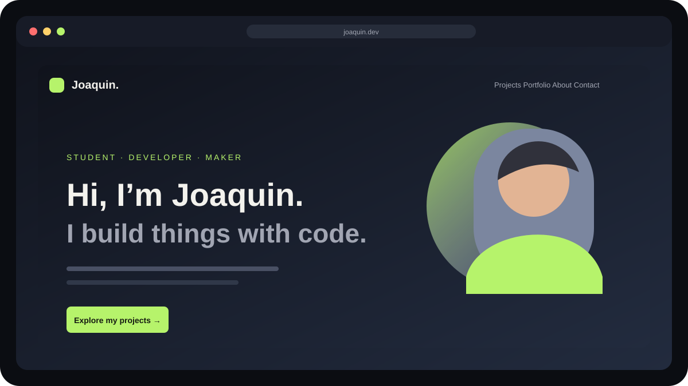

01Kotlin · Android
Tume-Arandu
An offline-first Android app for learning introductory trigonometry in Guaraní, with an optional Spanish translation and interactive exercises.
Project details →Projects / Selected repositories
Here are a few projects I’ve worked on. Each one is a chance to learn by making something real.

An offline-first Android app for learning introductory trigonometry in Guaraní, with an optional Spanish translation and interactive exercises.
Project details →
A small software 3D renderer for Windows that transforms vertices, rasterizes triangles, depth-tests geometry, maps textures, and draws each pixel on the CPU.
Project details →
This personal website, with independent pages for Projects, Portfolio, About, Now, and Contact.
Project details →